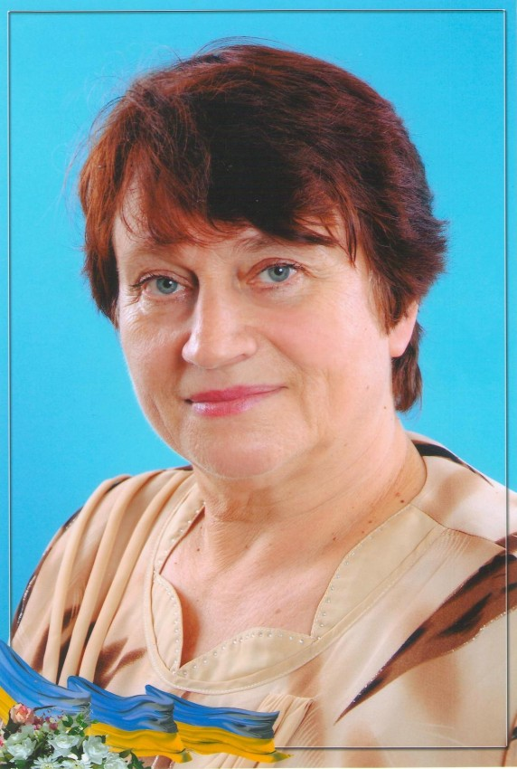
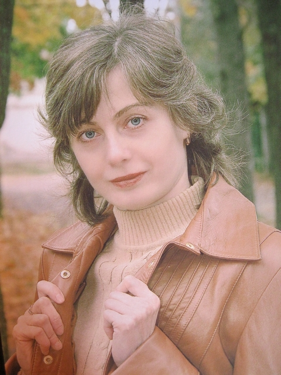

Головна сторінка
Розклад урокiв
Поміч учню
Наші досягнення
Новини
Фотогалерея
Атрохiна Свiтлана Миколаївна
Класний керiвник 8-А класу
та вчитель економiки.
Богданова Любов Петрiвна
Директор Куп'янського
Лiцею №4.
Положивець Ольга Вiталiївна, вчитель основ здоров’я та фiзичної культури
Юдiна Тетяна Венiамiнiвна, вчитель образотворчого мистецтва та трудового навчання
 Гриценко Наталя Олександрiвна, вчитель бiологiї та хiмiї
Кудрявець Свiтлана Володимирiвна, вчитель фiзики та математики
 Жадановська Людмила Вiкторiвна, вчитель математики
Пихова Оксана Володимирiвна, учитель англiйської мови
Власенко Дарiя Василiвна, вчитель зарубiжної лiтератури та мистецтва
Гичкои Наталiя Миколаївна, вчитель бiологiї
Коваленко Олександр Валентинович, Вчитель трудового навчання